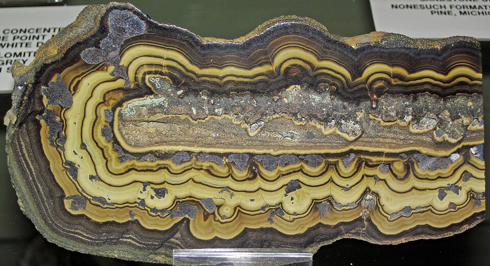
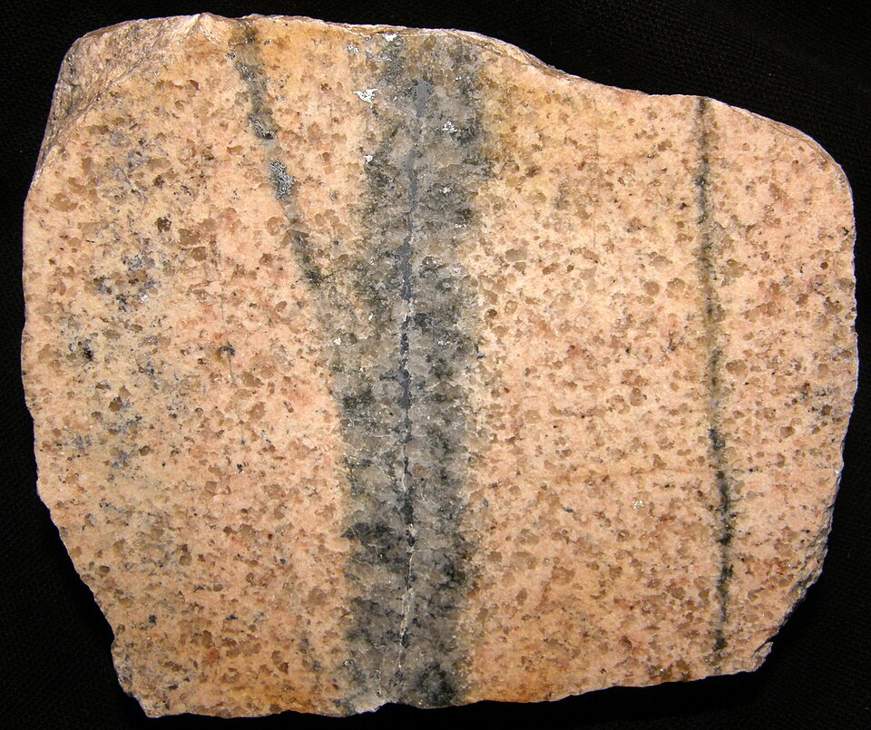
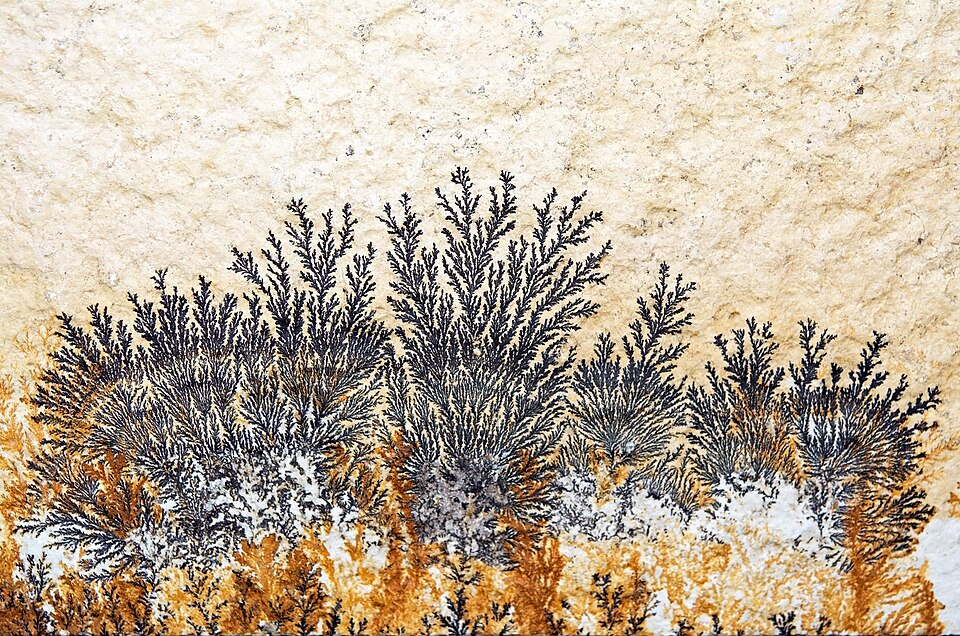

含金石英脉与围岩

1254×1254 PNG；下载展示图
查看实拍来源

File:Gold-quartz hydrothermal vein in matrix (Amador County, California, USA) (17161938811).jpg
源图尺寸 2620×1650；作者：James St. John；授权：CC BY 2.0
来源和授权说明已去除画面中的背景、标签、底座及标本外轮廓。下列图片经过 AI 辅助局部取景和重构，可能改变微观细节，不是原片的像素级纯裁切。实拍来源保留在展开区。仅作为展示素材，尚未做无缝化。
1254×1254 PNG；下载展示图
File:Gold-quartz hydrothermal vein in matrix (Amador County, California, USA) (17161938811).jpg
源图尺寸 2620×1650；作者：James St. John；授权：CC BY 2.0
来源和授权说明
1254×1254 PNG；下载展示图

File:Schalenblende (zinc-lead ore) (Early Cretaceous mineralization, ~135 Ma; Pomorzany Mine, Upper Silesia, Poland) 4 (39340548870).jpg
源图尺寸 3593×1950；作者：James St. John；授权：CC BY 2.0
来源和授权说明
1254×1254 PNG；下载展示图

File:Garnet-pyroxene-molybdenite-scheelite skarn (Late Cretaceous, 92 Ma; Reilly Mine, Osgood Mountains, Nevada, USA) 7.jpg
源图尺寸 3607×2604；作者：James St. John；授权：CC BY 2.0
来源和授权说明
1254×1254 PNG；下载展示图

File:Greisen-Geyer.jpg
源图尺寸 2520×2112；作者：Geomartin；授权：CC BY-SA 4.0
来源和授权说明
1254×1254 PNG；下载展示图

File:Psilomelane-pyrolusite 7100.4897.jpg
源图尺寸 2003×1328；作者：Géry PARENT；授权：CC BY-SA 4.0
来源和授权说明
1254×1254 PNG；下载展示图

File:Black concretionary phosphorite (Morris Member, Phosphoria Formation, mid-Permian; Waterloo Mine, Bear Lake County, Idaho, USA) (34327234316).jpg
源图尺寸 3008×1922；作者：James St. John；授权：CC BY 2.0
来源和授权说明